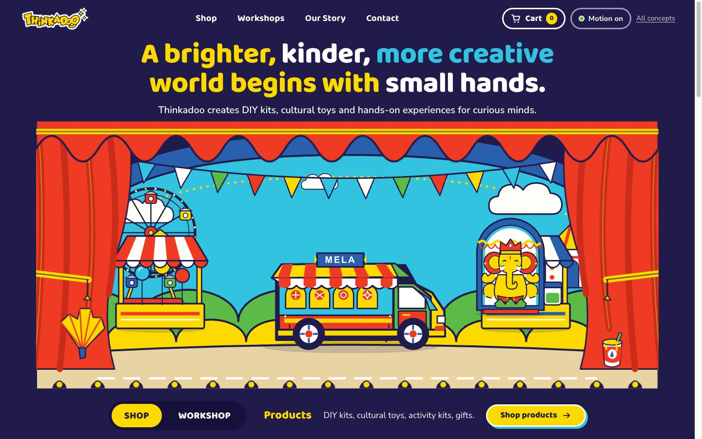
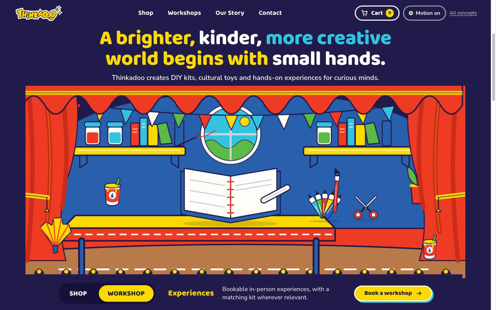

The Paper Theatre
Curtain up


A navy proscenium. The headline sits above a four-plane stage; scrolling is a camera push toward it. The tabs change the set.
Four planes
- Backdrop: arch, sky, halo
- Middle: hills, wheel, stalls, bunting
- Principal: the Mela Truck and a Ganesha
- Foreground: curtains, footlights, props
Try, and why it moves
- Scroll the hero
- Planes grow by unequal amounts, curtains part, wheels turn: depth you can read.
- Click WORKSHOP
- Flats fly out and the craft-table set drops in: the tab is a different scene.
- Hover the truck
- It lifts and a name tag drops: it is a link, and this is where it goes.
- Open an envelope (Mela page)
- The flap lifts, the envelope moves to the spotlight, the activity performs.
- Click any link
- Curtains close and open: you are changing scene.